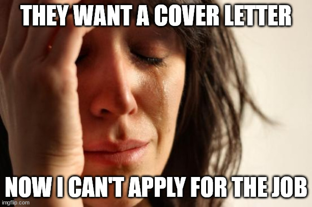
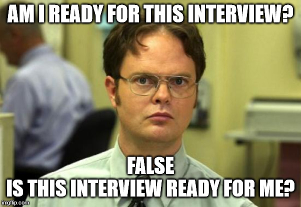

13 Job Market and Time Management
In this section, the focus is on securing a job. The first half will cover using LinkedIn to build your network, while the second half will explore the general steps in the job search process: researching the job market, writing an effective cover letter, acing interviews, and negotiating your salary.
Please note that what I am suggesting will not work for everyone and is based on my experience and some others. I hope they provide some guidance or suggestions to potentially explore. I often advise students and junior staff that it is best to get advice from several people. You will find a common thread among the people that will resonate with you, and you should go with that as a starting point.
13.1 LinkedIn Network
13.1.1 Update your profile
There are a lot of advice pages on what to do to update your profile page. I try to summarize these tips below:
Here are some top tips for improving your LinkedIn profile:
- Include Professional Photo and Banner Image: The saying “you only get one chance to make a first impression” holds true for your online presence as well. Your professional photo should be high resolution and look polished. Avoid selfies or low-resolution images. If you don’t have a professional headshot, many universities offer free headshot services or host events with professional photographers. Alternatively, you can use AI to generate a photo.
Photos can quickly become outdated, so consider refreshing your professional photo every couple of years. I update mine regularly. Don’t be like my friend who’s still using the photo from my wedding—10 years ago!
Also, upload a banner image. An empty banner can make your LinkedIn profile look incomplete. If you’re unsure what image to use, think of the banner as a way to reinforce your professional brand. For example, my current banner features the image from the cover of my book, which focuses on data privacy. In the past, I used a photo of myself speaking at a conference.
- Create a Detailed Headline: LinkedIn automatically populates your headline with your current job title and company. I typically edit it to reflect the title I use in short bios or when introducing myself. However, more and more professionals recommend adding more details, such as relevant keywords, to improve your LinkedIn search ranking. To update your headline, consider highlighting your skills, expertise, or what you want to be known for. Just be sure not to overload your headline with keywords—only include them if it makes sense.
https://www.linkedin.com/in/joshdelarosa/ https://www.linkedin.com/in/temilola-afolabi/ https://www.linkedin.com/in/richard-c-zink/ https://www.linkedin.com/in/jose-plehn/
- Write an Executive Summary: Think of your summary as your elevator pitch. It should be a few concise sentences that highlight your professional experience, skills, goals, and background.
A statistician specializing in statistical data privacy methods, including synthetic data and differential privacy, and their impact on the statistical analysis of economic data. Over 10 years of experience developing both technical and policy solutions with a strong passion for improving science communication and integrating data equity into the data privacy process. Proven track record of leadership, managing teams, and guiding projects that influence policy and data practices.
Junior Electrical Engineering student with a minor in Computer Science, aspiring to pursue a master’s degree in Electrical Engineering. Seeking a challenging internship that fosters collaboration and learning within a team of engineers and fellow students. Experienced in leadership roles during high school and actively engaged in various extracurricular activities individually and in teams.
Customize Your LinkedIn URL: If you haven’t already, personalize your LinkedIn URL as soon as possible! Customizing your URL can improve your search engine ranking. Make sure it reflects your name or your professional brand. For example, is my last name followed by my first name (e.g., https://www.linkedin.com/in/bowenclaire/). I use this URL on my “Contact Me” slide in presentations and on my personal website.
Update Your Location: Another update you need to make soon! Your location is one of the top five fields that LinkedIn prioritizes when doing a keyword search. You can update this information in the introduction section.
Profile Content:
List relevant skills and encourage colleagues to endorse you for them. Endorsements provide social proof and help boost your credibility.
The experience section should have each box filled with a bulleted list of your achievements like on your resume, along with added media of your achievements. You should have a featured section, with more samples of your work, news mentions, awards etc.
Include your academic background, any certifications, and relevant courses to demonstrate your qualifications.
Make sure your skills section is filled with skills the jobs you’re applying for expect from you.
13.1.2 How to identify connections
Before you start building your network, you first need to set a goal as to why you are doing this.
Follow various companies that you are interested and/or people who work at those companies.
Join and Participate in LinkedIn Groups: Joining relevant groups helps you stay informed about industry trends, network with like-minded professionals, and establish yourself as a thought leader.
13.1.3 How to engage with those connections
Request Recommendations: Ask colleagues, supervisors, or clients for recommendations that speak to your strengths and work ethic. These testimonials provide credibility and social proof.
Engage & Share Content: Regularly share industry-related articles, updates, and insights. This shows you are active and engaged in your field and can help build your professional brand.
Sending personalized LinkedIn requests – Rather than just clicking on connect, add a custom note while sending connection requests.
13.1.4 Practice
13.2 On the job market
The following are questions my students asked me that pertain to being on the job market.
13.2.1 How do you explore new job opportunities…
while being respectful of your current employer and avoiding the “grass is greener” syndrome?
We will break down the answer to this question in four parts.
Keep your materials up-to-date: Start by updating your resume, LinkedIn profile, and other professional materials. Personally, I update my CV/resume about every month, typically during the first week. In my field, it’s common to have an updated CV for grant and contract applications. If you regularly maintain your resume or professional social media presence, it won’t raise suspicions with your employer.
Think about why you are seeking another opportunity: Reflect on the key reasons for wanting to leave your current position. Is it a temporary annoyance, or is it a systemic issue that, if unresolved, will continue to affect your happiness?
For example, one of the most common reasons for leaving a job is having a difficult supervisor. Even if you enjoy your work, colleagues, and company, a bad supervisor can be a compelling reason to leave. Supervisors play a crucial role in advocating for key changes on your behalf, finding professional opportunities, and advancing your career. They are often responsible for your raises and promotions. Without a supportive supervisor, your career may stagnate or become difficult to advance.
Schedule interviews outside of work hours: When scheduling interviews, try to arrange them outside of your work hours. It is unethical to use work time for interviews. Some people take time off, make up the hours later in the day, or schedule interviews outside of their regular work hours.
Wrap up your projects neatly: As a supervisor who oversees several people, my biggest request before someone leaves is that they wrap up their projects and responsibilities neatly. This means leaving clear instructions, passing on knowledge, and identifying someone who can serve as a backup until a new person is hired. Additionally, take on quick tasks that can be completed before your departure to help your colleagues with bigger projects.
For example, one of my team members who helped managed my largest projects was leaving for graduate school. I had already identified a new person to take over her responsibilities. I asked the departing employee to train the new person, clean up the project directory, create read-me files or instructions for each subdirectory/responsibility, and meet with the new person to walk through those materials and responsibilities.
I once received advice to apply for a job occasionally (e.g., once a year) even if you are happy with your current position. Applying for new positions informs you about how competitive your skills are in the job market (i.e., what you are worth). You may learn something new about yourself or what you value. You may also discover an even better opportunity than you currently have.
13.2.2 What are the key elements of a good cover letter?

It goes without saying that most people (myself included) do not like writing cover letters. However, a good cover letter is important and should be customized to the job, highlighting how your experiences align with the job description. A cover letter typically has the following structure:
- Formal greeting: The greeting is usually to the hiring manager to the hiring committee (if known). If unknown, you can use something generic like “Dear Hiring Manager.”
Dear [Hiring Manager’s Name or Group],
- Introduction: The first paragraph or few sentences should state the position you are applying for, mention how you found out about the job opening (this is nice to know as the hiring manager), and provide a brief statement about why you are interested in the position or the company.
I am excited to apply for the position of [Position Name] at [Company Name] that was posted on [Where You Found the Job Posting]. With my background in [Your Field or Industry] and experience in [Relevant Experience], I am excited about the opportunity to contribute to your team.
- Or you could have the following for the last sentence.
Please accept this letter and my resume as my application for the position.
- Body Paragraphs: The next two or three paragraphs should highlight your most recent and relevant experiences and how they match the job posting. Be specific! Simply stating that you are “organized” or “a good communicator” does not demonstrate this to the hiring manager. Provide specific examples from your experience to illustrate these qualities.
I feel that my qualifications are well matched to the posted job description and requirements. I am seeking an opportunity to challenge and build upon my knowledge and experiences. At present, I am [Role, Responsibilities, Skills, etc.]. This experience has equipped me with the skills necessary to [Relevant Experience].
- Usually in second to last paragraph, you want to say why you are good fit for the company and why you are interested in that company.
My experiences, skills, and drive have prepared me to be an invaluable contributor to the [Company]. Moreover, being a part of [Company] would be ideal for my career as it would [Your Professional Goal and Alignment with Company Values/Mission].
- Closing paragraph: This paragraph should reiterate your interest in the position, mention how to find more information (if not already stated at the beginning), explain how they can contact you for next steps, and thank the hiring manager for considering your application.
I am eager in taking the next step in this process, please feel free to contact me by phone or email. I appreciate you taking the time to review my application, and I look forward to hearing from you soon.
- Another example.
I am excited to bring my skills and experience to [Company]. I have attached my resume for your review and would love the opportunity to discuss further how my background, skills, and certifications will contribute to your team. Thank you for considering my application.
If you’re going to use AI like ChatGPT to write your cover letter, make sure to heavily edit it afterward. AI is a tool, not a crutch. I’m currently reviewing job applications, and I can easily tell which ones were created with AI. The bonus for me is knowing which applicants to ignore.
This isn’t to say you shouldn’t use AI. HR and other companies are obviously using AI to filter applicants, so why not use the tool to help you? However, as I said, don’t just generate the cover letter without editing it to add your own voice. One of the applicants my colleague and I invited for a phone screen stood out mostly due to her cover letter being so unique and thoughtful.
13.2.3 What are some tips for interviewing well?

Here are some general tips:
Research your interviewers (if you know who they are). They will likely look you up, so it’s only fair you do the same. One candidate impressed me by reading a couple of my papers and sharing his thoughts during the interview.
Prepare an introduction about yourself that is concise, with a longer version ready if asked to elaborate.
Research the company and be ready to explain why you’re applying for the role and why you want to work for the company.
Dress appropriately and arrive on time if the interview is in person. For virtual interviews, ensure good sound quality, a suitable background, proper lighting, and a functioning camera. First impressions matter, even on video calls.
If you feel your handshake isn’t strong, consider practicing it with family, friends, or anyone willing to provide honest feedback. I understand it can be challenging for men, as they may worry about exerting too much pressure on women’s hands. However, women have the advantage in this regard, as we are less likely to apply excessive force. So, don’t hesitate to give a firm handshake!
Take your time if needed. It’s okay to say, “Can I have a moment to think about this question?” before answering. It’s better to gather your thoughts than to give a rushed or repetitive answer. Interviewers appreciate clear and concise responses.
Speak clearly and confidently. If the interview is on video or in person, try to smile and show enthusiasm, even if you’re nervous. Some roles require strong public speaking skills.
Prepare your own questions for the interviewer. Remember, you’re also interviewing them!
Follow up with a thank-you note reiterating your interest in the position.
When I was on the job market after graduate school, I had a set of questions I loved asking interviewers. I would note their responses so that I could mention them in my follow-up thank-you email. I found that many of them would respond and comment on my email.
13.2.4 How to negotiate salaries?
Before delving into salary negotiations, it’s essential to research the typical salary range for the specific role and responsibilities, taking into account the geographical location. Professional societies such as the American Statistical Association conduct surveys among their members, gathering valuable salary data. Additionally, consider reaching out to friends and family occupying similar positions, if they’re willing to share their salary information. While discussing salaries is often considered taboo, breaking this silence can be empowering for employees, rather than solely benefiting employers.
Many employers are obligated to disclose salary ranges, although some ranges may not be ideal (e.g., very wide). As a hiring manager, understanding your salary expectations is crucial, as it enables me to gauge whether my company can offer a suitable salary within that range (bearing in mind that I have limited control over the predetermined salary bands). This ensures that neither your time nor mine is wasted, minimizing frustration for both parties involved.
When presented with a salary offer, whether verbally or written, it’s advisable not to immediately accept or reject it. If the offer is verbal, take a moment before responding, expressing gratitude for the offer without revealing your opinion on its adequacy. You should mull over the offer for at least a day, carefully considering the other benefits such as vacation time and healthcare provisions in addition to the compensation.